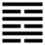

| Hỏa Thủy Vị Tế (未濟 wèi jì)
Kí tế là qua sông rồi, cũng rồi, nhưng theo luật thiên nhiên, không có lẽ nào hết hẳn được, hết mùa này đến mùa khác, hết thời này đến thời khác, hết lớp này đến lớp khác, sinh sinh hoá hoá hoài, cứ biến dịch vô cùng, cho nên tuy xong rồi nhưng vẫn là chưa hết, chưa cùng, do đó sau quẻ Kí tế tới quẻ Vị tế: chưa qua sông, chưa xong, chưa hết.
Thoán từ:
未濟: 亨．小狐汔濟, 濡其尾, 无攸利．
Vị tế: Hanh. Tiểu hồ ngật tế, nhu kì vĩ, vô du lợi.
Dịch: chưa xong, chưa cùng: được hanh thông. Con chồn nhỏ sửa soạn vượt qua sông mà đã ướt cái đuôi, không qua được, không có gì lợi cả.
Giảng: Quẻ này trái hẳn quẻ trên: lửa ở trên nước, nước và lửa không giao nhau, không giúp được nhau; cả 5 hào đều ở trái ngôi cả; dương ở vị âm, mà âm ở vị dương, cho nên gọi là vị tế: chưa xong.
Vị tế chứ không phải là bất tế, chưa qua sông được chứ không phải là không qua được, sẽ có thời qua được, lúc đó sẽ hanh thông. Thời đó là thời của hào 5, có đức nhu trung, biết thận trọng mà ở giữa quẻ Ly (thời văn minh). Vả lại tuy 5 hào đều trái ngôi, nhưng ứng viện nhau cương nhu giúp nhau mà nên việc: thêm một lẽ hanh thông nữa.
Thoán từ khuyên đừng nên như con chồn con, nóng nảy hấp tấp, mới sửa soạn qua sông mà đã làm ướt cái đuôi, không qua được nữa, không làm được việc gì lợi cả, không tiếp tục được đến cùng.
Đại tượng khuyên phải xem xét kỹ càng mà đặt người, vật vào chỗ thích đáng, thì mới nên việc, đừng đặt lửa ở trên nước chẳng hạn như quẻ này.
Ý nghĩa các hào:
1.
初六: 濡其尾, 吝．
Sơ lục: nhu kì vĩ, lận.
Dịch: Hào 1, âm: để ướt cái đuôi, đáng ân hận.
Giảng: Âm nhu, tài kém, ở vào đầu thời Vị tế, mà lại bước chân vào chỗ hiểm (khảm), như con chồn sắp sửa qua sông mà đã làm ướt cái đuôi, không biết tính trước phải ân hận.
2.
九二: 曳其輪, 貞吉．
Cửu nhị: Duệ kì luân, trinh cát.
Dịch: Hào 2, dương: kéo lết bánh xe, giữ đạo trung chính thì tốt.
Giảng: dương cương là có tài, ở vị âm là bất chính, thấy hào 5 ở ngôi tôn, ứng với mình là âm nhu, có ý muốn lấn lướt 5, như vậy sẽ hỏng việc, cho nên hào từ khuyên nên giảm tính cương của mình đi (như kéo lết bánh xe, hãm bớt lại) và giữ đạo trung của mình (hào 2 đắc trung) thì tốt, vì hễ trung thì có thể chính được.
3.
六三: 未濟, 征凶, 利涉大川．
Lục tam: Vị tế: chinh hung, lợi thiệp đại xuyên.
Dịch: Hào 3, âm: chưa thành đâu, nếu cứ tiến hành thì bị hoạ, vượt qua sông lớn thì lợi.
Giảng: Âm nhu, vô tài, lại bất trung, bất chính, không làm nên việc đâu, nếu cứ tiến hành thì xấu. Nhưng đã cảnh cáo: tiến hành thì xấu mà sao lại bảo qua sông lớn thì lợi? Mâu thuẩn chăng? Vì vậy mà có người ngờ trước chữ lợi, thiếu chữ bất vượt qua sông lớn thì không lợi, mới phải.
Có thể giảng như vầy: xét về tài đức của 3 thì không nên tiến hành, nhưng xét về thời của 3: Ở cuối quẻ Khảm, là sắp có thoát hiểm, hơn nữa trên có hào 6 dương cương giúp cho, thì sắp có cơ hội vượt qua sông lớn được. Lúc đó sẽ có lợi.
4.
九四: 貞吉, 悔亡．震用伐鬼方, 三年. 有賞于大國．
Cửu tứ: trinh cát, hối vong. Chấn dụng phạt Quỉ Phương, tam niên. Hữu thưởng vu đại quốc.
Dịch: Hào 4, dương: giữ đạo chính thì tốt, hối hận mất đi. Phấn phát (Chấn) tinh thần, cổ vũ dũng khi mà đánh nước quỉ Phương, lâu ba năm, nhưng rồi được nước lớn thưởng cho.
Giảng: Có tài dương cương, mà ở vào thời thoát khỏi hiểm (nội quái Khảm), tiến lên cõi sáng của văn minh (ngoại quái Ly), trên có hào 5, âm, là ông vua tin vậy mình,thì đáng lẽ tốt. Chỉ vì hào 4 này bất chính (dương ở vị âm) nên khuyên phải giữ đạo chính. Lại khuyên phải phấn phát tinh thần và kiên nhẫn mới làm được việc lớn cho xã hội, như việc đánh nước quỉ phương thời vua Cao Tôn (coi hào 3, quẻ Kí tế) ba năm mới thành công.
5.
六五: 貞,吉,无悔．君子之光有孚.吉．
Lục ngũ: trinh, cát, vô hối. Quân tử chi quang hữu phu, cát.
Dịch: Hào 5, âm: Có đức trung chính, tốt, không có lỗi. Đức văn minh của người quân tử do chí thành mà rực rỡ, tốt.
Giảng: Hào này âm ở vị dương là bất chính, nhưng vì âm nhu, đắc trung (trung còn tốt hơn chính) ở vào giữa ngoại quái Ly, là có đức văn minh rực rỡ, lại ứng với hào 2 đắc trung, dương cương ở dưới, nên hai lần được khen là tốt; lần đầu vì có đức trung, văn minh lần sau vì có lòng chí thành, hết lòng tin ở hào 2.
6.
上九: 有孚于飲酒, 无咎．濡其首, 有孚, 失是．
Thượng cửu: Hữu phu vu ẩm tửu, vô cữu
Nhu kì thủ, hữu phu, thất thị.
Dịch: Hào trên cùng, dương: tin tưởng chờ đợi như thong thả uống rượu chơi thì không lỗi, nếu quá tự tin mà chìm đắm trong rượu chè (ướt cái đầu) thì là bậy.
Giảng: Dương cương ở trên cùng quẻ là cương tới dùng cực, cũng ở cuối ngoại quái Ly là sáng đến cùng cực, đều là quá cả. Sắp hết thời Vị tế rồi, mà hào 4 và 5 đã làm được nhiều việc rồi, hào 6 này chỉ nên tự tín, lạc thiên an mệnh, vui thì uống rượu chơi mà chờ thời, như vậy không có lỗi. Nếu quá tự tín đến mức chìm đắm trong rượu chè (như con chồn ướt cái đầu), không biết tiết độ thì mất cái nghĩa, hoá bậy.